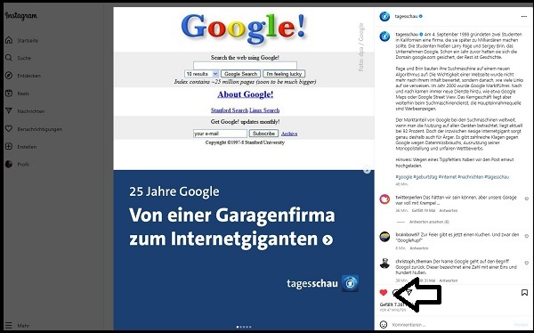
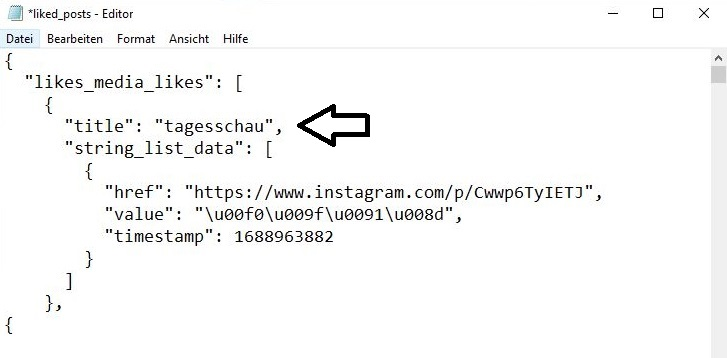
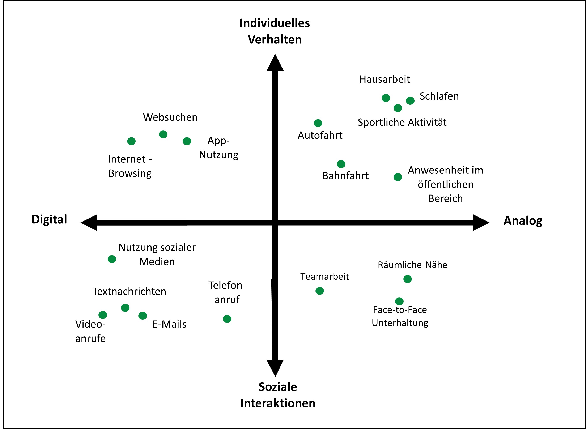
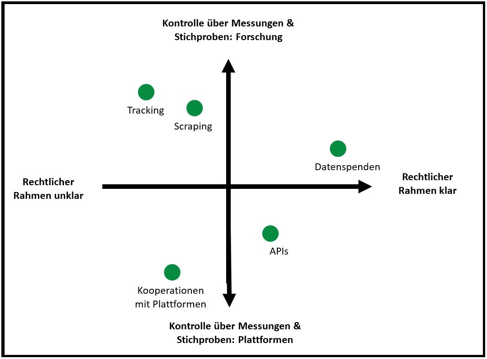

Digitale Datenspuren nutzbar machen
Datenspenden als Methode der Kommunikationswissenschaft
Sitzung 2️⃣: Einführung: digitale Datenspuren
Valerie Hase (Ludwig-Maximilians-Universität München)
👉 github.com/valeriehase & valerie-hase.com
Agenda
Was sind digitale Datenspuren?
Mit welchen Methoden kann ich auf digitale Datenspuren zugreifen?
1. Was sind digitale Datenspuren?
Kennt ihr Beispiele für digitale Datenspuren? 🤔
Beispiel I

Beispiel II

Beispiel III

Was sind digitale Datenspuren?
Definition 💡: Aufzeichnung und Speicherung von Aktivitäten auf digitalen Plattformen, die Rückschlusse auf digitale wie analoge Phänomene ermöglichen
“records of activity (trace data) undertaken through an online information system” (Howison et al., 2011, S. 2)
“individuals leave behavioural residue (unconscious traces of actions [.]) when they interact online” (Hinds & Joinson, 2018, S. 2)
Was sind digitale Datenspuren?
Definition 💡: Aufzeichnung und Speicherung von Aktivitäten auf digitalen Plattformen, die Rückschlusse auf digitale wie analoge Phänomene ermöglichen
- z.B. Tweets, Likes, Shares
- z.B. Geo-Daten (Standort teilen, Sportaktivitäten)
- z.B. digitale Zahlungen
- z.B. Spotify-Playlisten
Was sind digitale Datenspuren?
Definition 💡: Aufzeichnung und Speicherung von Aktivitäten auf digitalen Plattformen
- z.B. Tweets, Likes, Shares
Beispiel: Instagram Like

Was sind digitale Datenspuren?
Definition 💡: Aufzeichnung und Speicherung von Aktivitäten auf digitalen Plattformen
- z.B. Tweets, Likes, Shares
Beispiel: Instagram Like

Wo lassen sich digitale Datenspuren finden?
- Social Media Plattformen (z.B. Instagram)
- Apps (z.B. Lauf-Apps)
- Payment-Systeme (z.B. Paypal)
- Wearable Devices (z.B. Smart Watch)
Welche Daten enthalten digitale Datenspuren?
Je nach Datenzugang u.a. (Haim & Hase, 2023; Keusch & Kreuter, 2021; Ohme et al., 2023):
- digitale Nutzerprofile/Einstellungen
- digitale Aktivitäten (Nutzung, Nachrichten, Engagement, etc.)
- digitales Targeting (Werbung, algorithmische inferierte Interessen)
- analoge Aktivitäten (Reisen, Schlafen, Sport)
Was können wir mit digitalen Datenspuren messen?
- von individuellem Verhalten zu sozialen Interaktionen
- von digitalem zu analogem Verhalten

Was können wir mit digitalen Datenspuren messen?
- Internet-/Smartphone-Nutzung (Ohme et al., 2021; Scharkow, 2016; Wu-Ouyang & Chan, 2022)
- Nachrichten-Nutzung (Reiss, 2022; Thorson et al., 2021)
- Prozesse öffentlicher Meinungsbildung (Jürgens & Stark, 2022; Yan et al., 2022)
Warum werden digitale Datenspuren populärer?
- Probleme bei Selbstauskünften, z. B. bei Umfragen
- Verfügbarkeit
Warum werden digitale Datenspuren populärer?
- Probleme bei Selbstauskünften, z. B. bei Umfragen
- Verfügbarkeit
Warum werden digitale Datenspuren populärer?
- Probleme bei Selbstauskünften, z. B. bei Umfragen
„Wie viele Minuten am Tag nutzen Sie das Internet, um Nachrichten zu konsumieren?”
- „Internet”?
- „Nachrichten”?
- „wie viele Minuten”?
Warum werden digitale Datenspuren populärer?
- Probleme bei Selbstauskünften, z. B. bei Umfragen
- Selbstauskünfte wenig akkurat bzw. verzerrt: Datenspuren versprechen genauere Messungen (Parry et al., 2021; Scharkow, 2016; Wu-Ouyang & Chan, 2022)
- sinkende Teilnahmebereitschaft bei Unfragen (Luiten et al., 2020)
Warum werden digitale Datenspuren populärer?
- Probleme bei Selbstauskünften, z. B. bei Umfragen
- Verfügbarkeit
- kostengünstig (z. B. APIs)
- grosse Menge an Daten (“Big Data”)
Warum werden digitale Datenspuren populärer?
- Probleme bei Selbstauskünften, z. B. bei Umfragen
- Verfügbarkeit
Aber: nicht alle dieser Punkte treffen tatsächlich zu bzw. sind vorteilhaft
Vor- und Nachteile digitaler Datenspuren
- ✅ akkuratere Messungen durch Zeitstempel
- ✅ z.T. Messung neuer Variablen (z.B. zu algorithmischer Inferenz)
- ❌ weiterhin Verzerrungen durch Stichproben- und Messfehler
- ❌ unklare theoretische Rückbindung
- ❌ z.T. hohe Kosten für Implementierung
- ❌ mehr Daten heisst nicht bessere Daten!
Zusammenfassung: Digitale Datenspuren 📚
2. Mit welchen Methoden kann ich auf digitale Datenspuren zugreifen?
Welche methodischen Zugänge kennt ihr, um digitale Datenspuren zu sammeln? 🤔
Methodische Zugänge
- API (Jünger, 2021)
- Datenspenden (Driel et al., 2022)
- Kooperationen mit Plattformen (Wagner, 2023)
- Scraping (Mitchell, 2018)
- Tracking (Christner et al., 2022)
Methodische Zugänge

Technische Veränderungen
- Einschränkung plattformseitiger Zugänge zu Daten
- Einstellung zahlreicher APIs (Bruns, 2019; Freelon, 2018)
- Sorge über Verzerrung bei Zugang über APIs/Scraping (Buehling, 2023; Ho, 2020; Schatto-Eckrodt, 2022)
- Kooperationen mit Plattformen sehr eingeschränkt möglich (Wagner, 2023)
- Aufkommen nutzerseitiger Zugänge
- Datenspende
- Tracking
Rechtliche Veränderungen
- EU verankert Recht auf eigene Daten in Art. 15 Datenschutz-Grundverordnung, kurz DSGVO
- “Die betroffene Person hat […] ein Recht auf Auskunft über diese personenbezogenen Daten” (Art. 15 (1)
- “Der Verantwortliche stellt eine Kopie der personenbezogenen Daten […] zur Verfügung” (Art. 15 (3))
- Nutzer:innen müssen laut Art. 20 Daten übermitteln können: “Die betroffene Person hat das Recht, die sie betreffenden personenbezogenen Daten […] in einem strukturierten, gängigen und maschinenlesbaren Format zu erhalten” (Art. 20 (1))
Rechtliche Veränderungen
- EU verankert Recht auf eigene Daten in Art. 15 Datenschutz-Grundverordnung, kurz DSGVO
- “Die betroffene Person hat […] ein Recht auf Auskunft über diese personenbezogenen Daten” (Art. 15 (1)
- “Der Verantwortliche stellt eine Kopie der personenbezogenen Daten […] zur Verfügung” (Art. 15 (3))
- Nutzer:innen müssen laut Art. 20 Daten übermitteln können: “Die betroffene Person hat das Recht, die sie betreffenden personenbezogenen Daten […] in einem strukturierten, gängigen und maschinenlesbaren Format zu erhalten” (Art. 20 (1))
👉 Lösung: Plattformen bieten Daten-Pakete (DDPs) an, die Informationen über Nutzer:innen enthalten und von diesen heruntergeladen werden können.
👉 Konsequenz: Die Wissenschaft nutzt diese DDPs im Rahmen von Datenspende-Studien.
Zusammenfassung: Datenzugänge 📚
Zusammenfassung:
zentrale Methoden u.a. APIs, Datenspenden, Kooperationen mit Plattformen, Scraping, Tracking
zentrale Unterschiede: Kontrolle über Stichproben & Messungen durch Plattformen, Forschung (& Nutzer:innen); rechtlicher Rahmen
Weiterführende Literatur:
Fragen? 🤔